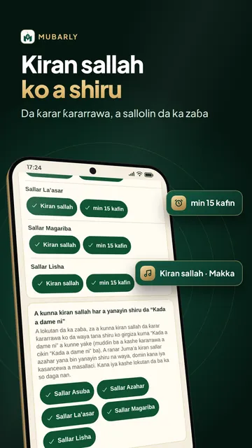
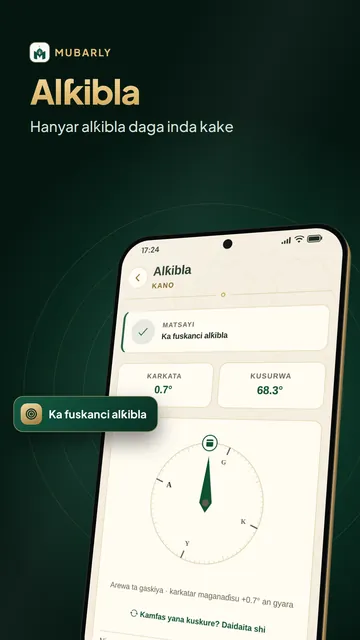
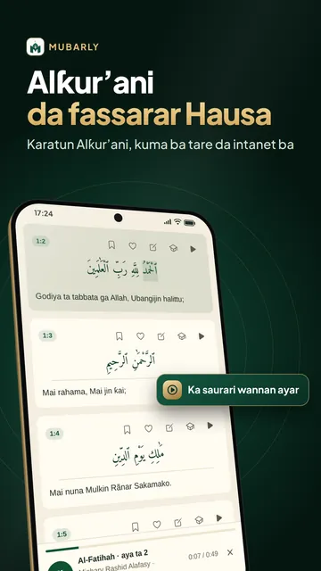
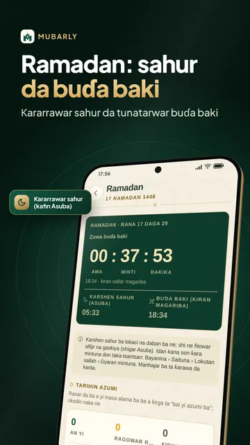
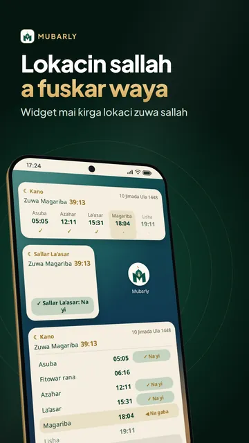
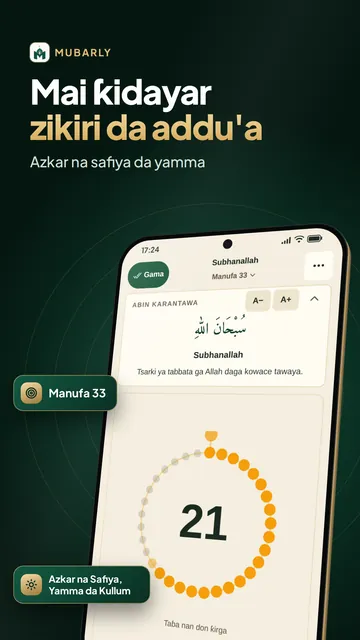
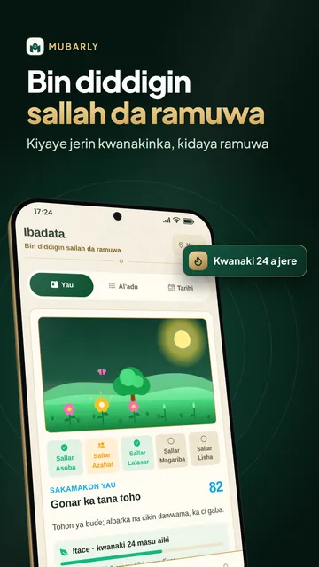

Lokacin sallah da kiran sallah







Lokutan sallah bisa birni
Mubarly manhaja ce da ke nuna lokacin sallah a duk inda kake, tare da Alkur'ani da fassarar Hausa, alkibla, addu'a da zikirin safe da yamma. Kiran sallah na iya yin ƙara kamar ƙararrawa ko da wayarka tana shiru, kuma kai ne ke zaɓar sallolin. Lokacin sallah da sanarwa suna aiki ko babu intanet, ba sai ka buɗe asusu ba.
Lokacin sallah da kiran sallah
- Lokutan sallah na Kano, Kaduna, Katsina, Abuja da ko'ina a duniya, da hanyoyin lissafi 14 kamar Muslim World League
- Zaɓi sautin kiran sallah: Makka, Madina ko salon Balkan (kabbarorin farko, kusan daƙiƙa 20), ƙararrawa mai laushi ko girgiza kawai
- Saiti mataki-mataki yana kunna duk abin da sanarwa ke buƙata, kuma yana gargaɗinka idan za ta iya jinkiri ko yin shiru
- Tunatarwa kafin kowace sallah da kafin Juma'a, da tambayar “Ka yi sallah?” da ake amsawa da taɓawa ɗaya
- Widget uku a allon wayarka da ƙidayar baya da maɓallin “Na yi”
- Jadawalin kwana 30 a PDF, lokutan makruhi, kalandar Hijira da gyaran mintuna
Alƙur'ani mai girma
- Kowace aya da Larabci da fassarar Hausa a ƙarƙashinta, rubutun Usmani ko Imla'i, ko shafukan mushafi; rubutun Larabci yana aiki ko babu intanet
- Karatun makaranci 9 shahararru kamar Mishary Alafasy, Abdul Basit da as-Sudais da maimaita aya
- Sauke sura, Juzu'in Amma ko Alƙur'ani duka (kusan GB 1) don sauraro ko babu intanet
- Alamomin shafi da rubutattun bayanai, Yanayin Haddar (Premium) da Alif Ba don koyon karatun Alƙur'ani
Addu'a, zikiri da hadisi
- Zikirin safiya da maraice da addu'o'in yau da kullum (azkar 55), kowanne da tushensa na hadisi
- Mai Ƙidayar Zikiri kamar carbi a wayarka, da tasbihi bayan sallah da bayanan zikirinka
- Sunayen Allah 99 (Asma'ul Husna) da ma'anoninsu
- Hadisai da darajarsu da sharhi, da Hadisai Arba'in
Koyon sallah, Hajji da Umara
- Jagorar sallah: yadda ake sallah mataki-mataki, bisa mazhabarka
- Jagorar Hajji da Umara: ayyuka mataki-mataki, addu'o'i, ƙidayar ɗawafi da sa'ayi, da jerin shiri
- Tarihin annabawa da muhimman abubuwan tarihin Musulunci
Ramadan 2027: lokacin sahur da buda baki
- Ƙararrawar sahur tana ƙara ko da waya tana shiru, kuma tana maimaitawa har sai ka taɓa “Na tashi”
- Sanarwar buɗa baki a Magariba, da ƙidayar lokaci kai tsaye zuwa ƙarshen sahur da buɗa baki
- Hukuncin azumi bisa mazhabarka, azumin ramuwa da nafila, bayanan Tarawihi da zakkar fid da kai
Alƙibla
- Kamfas mai gyaran karkatar maganaɗisu, daidai a kwance ko a tsaye; ko ka gano alƙibla ta hanyar rana
Bin diddigin sallah
- Yi wa kowace sallah alama: a kan lokaci, a makare ko cikin jam'i; ka ga jerin kwanakinka da lambun ibadarka
- Lissafin ramuwar sallah da azumi, da sallar matafiyi, bisa mazhabarka
- Mata za su iya yi wa kwanakin haila ko jinin haihuwa alama ba tare da karya jerinsu ba
Masallatai
- Masallatai sama da 300,000 a taswira, da lokutan iƙama na masallacinka
Zakka da ibada tare
- Lissafin Zakka na zinariya, azurfa da kuɗi, da farashin gram na yanzu a Naira ko kuɗin ƙasarka
- Yanayin Iyali, Halkar Hatimi don sauke Alƙur'ani tare, da 'Yan'uwantaka: nemi addu'a, ka ce “Amin” ga wasu. Duk kyauta, babu rajista
Mazhabobi huɗu
- La'asar, azumi, ramuwa, zakka, tafiya da kwanakin uzuri suna bin mazhabar da ka zaɓa: Hanafi, Shafi'i, Maliki ko Hanbali; bayanai na zuwa da tushensu
Sauƙin amfani
- Yanayi Mai Sauƙi da manyan haruffa, jigo mai duhu, da harsuna 20 ciki har da Hausa, Turanci, Larabci da Faransanci
Premium: sassan ibada kyauta ne ga kowa. Babu tallar da ke rufe allo, babu kuma talla a shafukan Alƙur'ani, kiran sallah ko alƙibla. Premium yana cire duk talla, yana ƙara Yanayin Haddar, Barci da Tunani (sautukan barci, tasbihi kafin kwanciya da atisayen numfashi) da ƙarin jigogin kamfas da na mai ƙidaya. Ko kuma ka kalli gajeren bidiyo don buɗe Premium na wasu sa'o'i.
Sirri: babu buƙatar asusu (shiga da Google na zaɓi ne, don ajiya); ba a bin wurinka a bayan fage, ba a amfani da kyamara ko makirufo; ana lissafa lokutan sallah da alƙibla a wayarka; Mubarly ba ta sayar da bayananka.